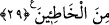

Aziz çocuktan bu sözü dinleyince
Gitti gömleğin durumunu inceledi
Gömleğin arkadan yırtıldığını görünce
O hîlekar kadını kınadı
Bu söz üzerine Züleyhâ ne yapacağını bilemeyerek öylece kalakaldı. Burada tüm
kadınların muhatap alınmasında tuzak kurmanın kadınların rûhuna işlemiş bir huy
olduğuna dikkat çekilmektedir.
“Sizin tuzağınız gerçekten büyüktür.” dedi.” Çünkü sizin tuzağınız, erkeklerin
kalbini fazlasıyla sarıp esir almakta, nefislerine çok daha fazla tesir etmektedir. Yani
sizin tuzağınız erkeklerin tuzağından daha büyüktür. Bu mânâya göre kadınların hîlesinin
büyüklüğü erkeklerinkine nisbetledir. Ayrıca şeytan gizlice vesvese verirken kadınlar
erkeklerle yüz yüze gelerek vesvese verdikleri için kadın hîlesi, şeytan hîlesine göre de
büyük olmaktadır.
Âlimlerden birinin şöyle dediği nakledilir: “Ben şeytandan korkmadığım kadar
kadınlardan korkarım. Çünkü Allah Teâlâ şeytan hakkında: “Şüphesiz şeytanın hîlesi
zayıftır.” (en-Nisâ, 4/76) buyururken, kadınların hîlesi hakkında “Sizin tuzağınız
gerçekten büyüktür.” buyurmuştur.
Kadın hîlesinden erkeklerin gönlü iki bölüktür
Kadınların hîleleri pek büyüktür
Azizleri kadınların hîlesi hor ve hakir eder
Kadın hîlesi âlimi belâya giriftar eder
Kadın hîlesinden Allah kimseyi âciz kılmasın!
Hilekar kadın hakikatte asla olmasın!
29. “Ey Yûsuf! Sen bundan (olanları söylemekten) uzak dur. (Ey kadın!) Sen de
günahının affını dile! Çünkü sen günahkârlardan oldun.”
Aziz dedi ki: “Ey Yûsuf! Sen bundan” yani bu olan işten, onu başkalarına anlatmaktan
“uzak dur.” meseleyi örtbas et ki milletin ağzına düşüp de beni ayıplamasınlar.
Gammazlamak düşüncesini aklından geçirme
Ki perde çekmek, perdeyi yırtmaktan iyidir
Ey Züleyhâ! “Sen de” kendinden sâdır olan ve aleyhine sâbit olan şu “günahının
affını dile! Çünkü sen” yaptıkların sebebiyle “günahkârlardan” hatâ ve günaha kesin